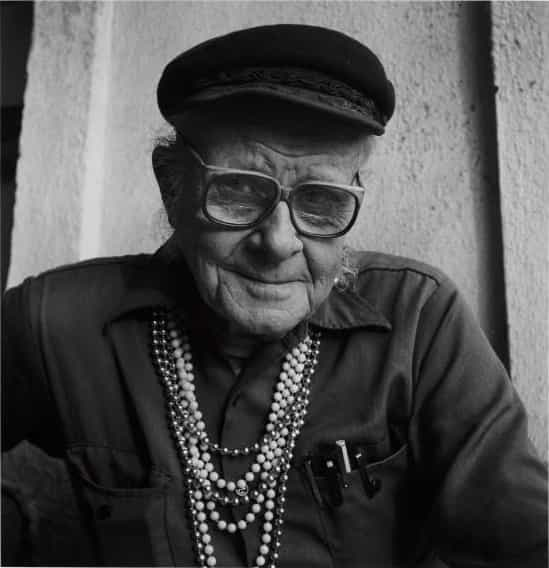

It’s commonly believed that the Stonewall riots started the LGBT movement, sparked by a 1969 police raid on a New York gay bar. Actually, things were in motion long before. In 1950, America’s first successful gay activist group was formed. Who they really were is a long story.
Harry Hay’s colorful history

Harry Hay was born in 1912 to a prosperous, world-traveling mining engineer. When he was young, his family moved to California. He got along badly with his father, who considered him a sissy. When he was nine, he had sex with a twelve year old boy. Later, he lied about his age and went to sea at fourteen, and then hooked up with a twenty five year old sailor. As a young adult he began cruising for guys in Los Angeles. Upon entering college, he got interested in the theater scene, and also began frequenting underground gay clubs in LA and San Francisco.
He dropped out for health reasons, but continued pursuing theatrical interests. In 1934, bisexual actor Will Geer became his steady boyfriend. Hay, already favorable to radical causes, embraced Communism under his guidance. Together they distributed literature for several front groups with hidden Marxist agendas. Geer later got on the Hollywood blacklist, but eventually became best known as Grandpa in The Waltons.
In 1938, Hay tried going straight by marrying Anna Platky—another Party member—later adopting two children. Back then, American Communists considered homosexuality deviant, something which not even mainstream conservatives dare express now. However, before long, he was cruising for guys again. They divorced in 1951, the year after he’d met fashion designer Rudi Gernreich.
With his new boyfriend, they founded a gay advocacy group, eventually called the Mattachine Society, approximately meaning “masqueraders”. Hay later gave up CPUSA membership and Mattachine leadership for public relations reasons, though remained involved in leftist and gay causes. In the 1970s, he took up American Indian spirituality (a long-time interest) and also co-founded the Radical Faeries. In 2002, he died in San Francisco, lauded as a pioneer.
The Homintern
Looks pretty reasonable, so far.
Hay’s unorthodox interpretation of traditional Marxism considered homosexuals a distinct social category similar to ethnic minorities. However, that concept was right on track with cultural Marxism, soon to reach critical mass in the 1960s. The basic script is to radicalize a social category with class consciousness, hiding true agendas behind front groups, and initially limiting rhetoric to moderate appeals for fairness and equality. After demands are met, move the goalposts, repeat ad infinitum. Sounds familiar?
Hay’s Mattachine Society drew further Communist inspiration from multi-level cell-based structures like guerrilla units and spy rings. It began basically as a secret society, though with a public newsletter and local discussion groups. Soon the FBI took notice.
Their constitution disclaimed political affiliation:
[W]e find it especially significant that the most brutal and restrictive laws against homosexuals occur in those countries like Russia, where the freedom of the individual is most severely limited; and whereas those who attack the basic freedom of individual in this country, both of the extreme right and extreme left, have been the most bitter enemies of the homosexuals…
Despite this stated sentiment, early membership was heavily Communist; not unlike today’s average college sociology department. Despite their tight security, the FBI report indeed noted participation of several CPUSA members. Another item describes a blood donation drive for good publicity, something that wouldn’t have gone over well three decades later. On the legal front, the Mattachines opposed vice stings (resulting in an important court victory). As might be expected, their literature equated opposition to homosexuality with McCarthyism.
It’s all quite strange. Wouldn’t Communism be unnecessary baggage for a general gay advocacy group? The FBI report hints at dissension over this. Further, orthodox Communists then considered homosexuality to be bourgeois decadence. Still, since both pursuits didn’t mesh well, were mainly underground, and organizing depended much on word-of-mouth, how could Hay unite so many fruity Bolsheviks—and why? Were they effectively the CPUSA’s punishment battalion?
The early document “A brief history of the Mattachine movement” states their goals, including under the “General” subheading:
1. To accomplish these aims in a law-abiding manner. Homosexuals are not seeking to overthrow or destroy any of society’s existing institutions, laws or mores, but to be assimilated as constructive, valuable and responsible citizens. […]”
2. We oppose indecent public behavior, and particularly excoriate these who would contribute to the delinquency of minors and those who attempt to use force or violence upon any other persons whatsoever.
How the times have changed! Item 3 claims they’re politically unaffiliated, opposed to Communism, and won’t become a front group. Believe what you will. After attaining broader outreach, the Mattachines numbered thousands of members.
Hay himself walked a strange line between radicalism and moderation. He strongly espoused gender nonconformity, himself quite fond of women’s clothing and jewelry. However, he criticized the Stonewall riots—which took the American LGBT movement he inaugurated to the next level—as setting a bad example of disorderliness. The Mattachines then became seen as stodgy and insufficiently radical; ultimately overtaken by their own momentum.
Hay’s other agenda
Although perceivedly too moderate, he said this in 1983 at NYU:
Because if the parents and friends of gays are truly friends of gays, they would know from their gay kids that the relationship with an older man is precisely what thirteen-, fourteen-, and fifteen-year-old kids need more than anything else in the world.
Perhaps he enjoyed being punked out as a kid, but most child abuse victims certainly do not. This emphatic recommendation is considerably worse than calling this not always traumatic, or even “delightful” and “delicious”. Hay associated with the North American Man-Boy Love Association (much like Allen Ginsberg), speaking frequently at their events.
This is even more troublesome than his Communist ties. He’d worked hard to make homosexuals respectable; just ordinary folks with different romantic inclinations. However, that wasn’t the real Harry Hay.
Lessons learned
All the above reveals considerable double-talk between moderate public images versus actual viewpoints. Despite the carefully crafted aura of moderation for the movement he launched, much more was beneath the surface.
It’s like the Muslim principle of taqiyya, basically lying to one’s enemies. Such deception may be tactically profitable, per Alinsky’s “ends justify the means” concept. However, that certainly gives no reason to trust further agendas by radicals.
Read More: New California Law Allows Jail Time If You Use Wrong Gender Pronoun On Tranny